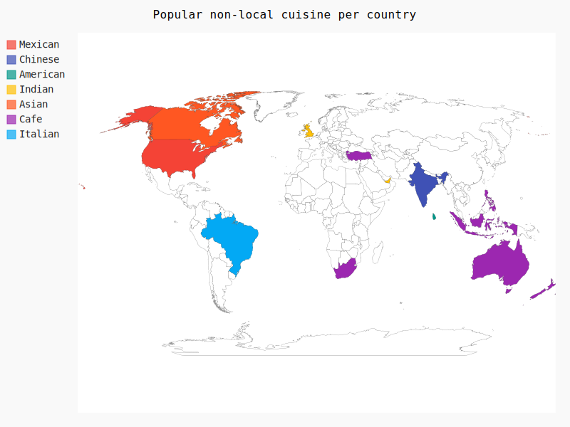

How Cuisines evolved!
The graph below shows popular non-local cuisine in each country.
Find cities with the best restaurants!
Search for a city to know more about its restaurant ratings and price.

Find out how many varieties of cuisines are available in your favorite city.

Explore popular restaurants in the US!
Zoom in and hover to know more about popular restaurants in the US.

Find out how cost influences ratings
Find out how cost affects restaurant ratings by cuisine.